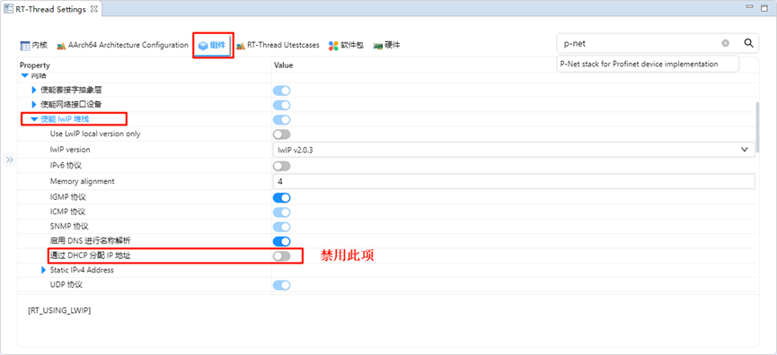
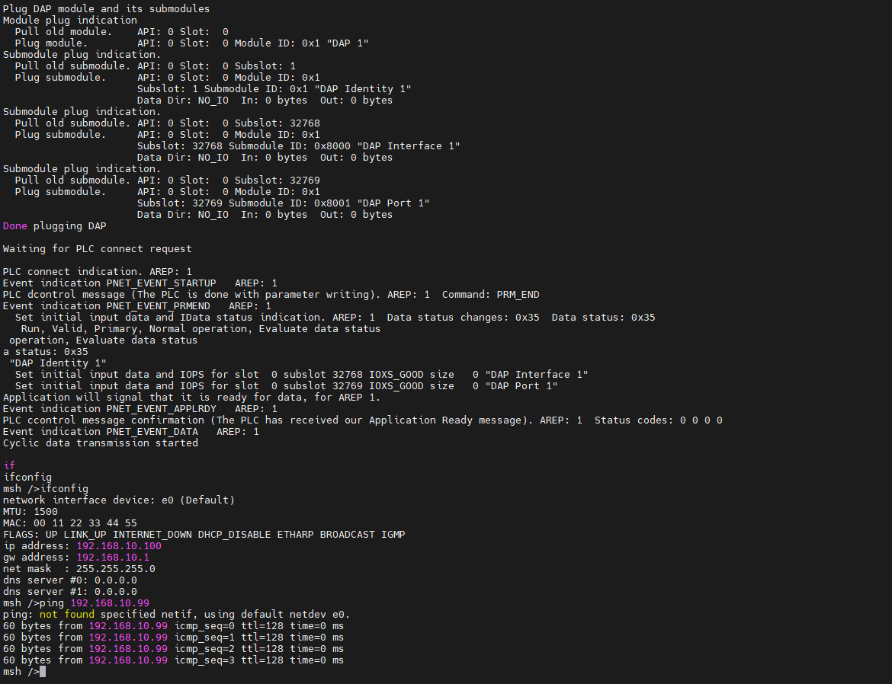
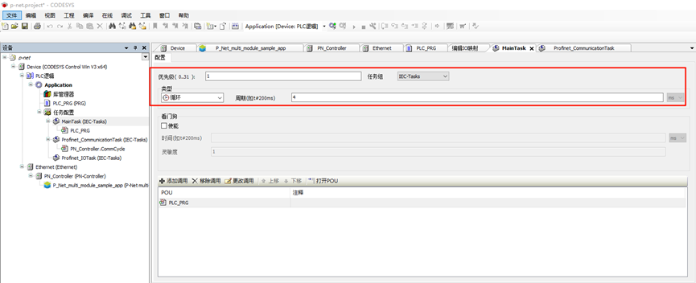
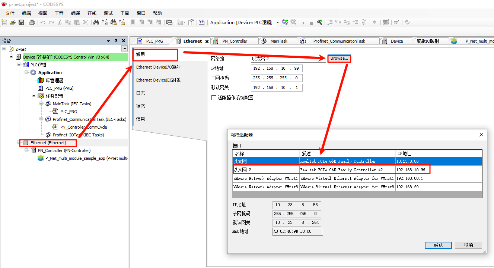
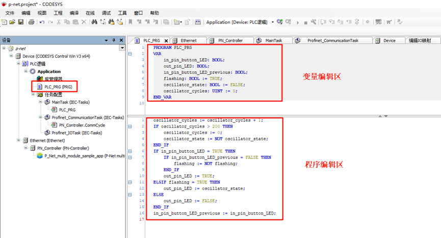

PROFINET Usage Instructions
English | 中文
Introduction
PROFINET is an industrial Ethernet standard developed and promoted by PI (PROFIBUS and PROFINET International) and is widely used in the industrial automation field.
P-Net is an open-source PROFINET implementation, specifically designed for real-time network communication in embedded devices. It is a lightweight PROFINET protocol stack aimed at providing developers with a quick and efficient way to integrate PROFINET functionality into embedded platforms.
In this example, we will use the P-Net software package to implement PROFINET master-slave communication.
Prerequisites
Software Environment:
CODESYS (PROFINET master simulation)
CODESYS
CODESYS Gateway (Gateway device)
CODESYS Control Win SysTray (Soft PLC device)
Npcap(The software is running CODESYS must, need installed in advance!)
Hardware Environment:
EtherKit development board
FSP Configuration Instructions
Open the project configuration file configuration.xml and add the r_gamc stack:

Next, click on g_ether0 Ethernet, and configure the interrupt callback function to user_ether0_callback:

Now configure the PHY settings. Select g_ether_phy0, set the common configuration to “User Own Target”, change the PHY LSI address to 1 (refer to the schematic for the exact address), and set the PHY initialization callback function to ether_phy_targets_initialize_rtl8211_rgmii(). Also, set the MDIO to GMAC.

Next, configure g_ether_selector0, set the Ethernet mode to “Switch Mode”, set the PHY link to “Default Active-Low”, and choose “RGMII” for the PHY interface mode.

Configure the Ethernet pin parameters and select the operating mode to RGMII:

Finally, configure ETHER_GMAC:

RT-Thread Settings Configuration
Double-click to open RT-Thread Settings, search for the p-net package in the search bar and enable it. Below are the related user configuration details:

Default netif name for p-net: The interface name for the p-net network card device, default is e00.
Enable pnet sample board config: Configuration for user LED and button on the p-net application.
Default root filesystem path for p-net: Configuration for the p-net filesystem, default is using ramfs, with 8K of memory space allocated by default.
P-NET sample slave network ip config: Static IP configuration for the p-net slave device (Please disable RT_LWIP_DHCP functionality and use static IP).
Next, we need to configure the system to disable DHCP and use a static IP. Click on the component -> enable the lwip stack, and select to disable DHCP:

After completing the above configurations, compile the program and download it to the development board.
Network Configuration
Connect the development board to the PC using an Ethernet cable, and configure a static IP on the PC:

Check the IP information on the development board and test connectivity:

Soft PLC Startup
CODESYS Overview: CODESYS is a PLC software developed by 3S (Germany), integrating PLC logic, motion control, configuration, display, and other functions. CODESYS, short for Controller Development System, is an industrial automation programming tool based on the IEC 61131-3 standard. It supports various programming languages (e.g., Ladder Diagram, Structured Text, Function Block Diagram) and provides libraries and function modules, making it a widely used platform in industrial automation for developing and debugging PLCs and control systems.
Creating a Standard Project in CODESYS
Ensure that you have CODESYS installed. After installation, the following three software components are required:
CODESYS V3.5 SP20 Patch 3: PROFINET master simulation
CODESYS Gateway V3: Gateway device
CODESYS Control Win V3 -x64 SysTray: Soft PLC device
First, open CODESYS V3.5 SP20 Patch 3, choose New Project -> Projects -> Standard project, configure the project name and location, and click OK:

After the following popup, keep the default Settings (CODESYS Control Win V3 (CODESYS)/x64 (CODESYS)) and click OK:

Note: If you have purchased CODESYS Control RTE SL, select the device: CODESYS Control RTE V3 (CODESYS) / x64 (CODESYS). For evaluation purposes, you can choose CODESYS Control Win V3 (CODESYS) / x64 to create the project.
After creation, you will see the main interface:

Starting Gateway and Soft PLC
Open the following two software components:
CODESYS Gateway V3 (right-click Start Gateway)
CODESYS Control Win V3 -x64 SysTray (right-click Start PLC)

Back in CODESYS, double-click Device(CODESYS Control Win V3 x64) -> Communication Settings -> Scan Network:

In the user login window, configure the username and password (customizable):

Check if the gateway and soft PLC devices are online:

Adding PROFINET GSDML Files
GSD (Generic Station Description) files are used for PROFIBUS DP and PROFINET IO communication, describing parameters, diagnostic data, and user-defined data between the PLC and I/O modules.
The GSDML file for this project is located at:
..\src\ports\rtthread\pn_dev
Install the GSDML file from the above path: GSDML-V2.4-RT-Labs-P-Net-Sample-App-20220324.xml.

After installation, you should see the P-Net slave description file:
Adding Devices
Adding Ethernet: Right-click Device in the left navigation bar and select Ethernet Adapter:

Adding PROFINET IO Master: Right-click Ethernet in the left navigation bar and select PN-Controller:

Adding PROFINET IO Slave: Right-click PN-Controller in the left navigation bar and select P-Net-multiple-module sample app:

Configuring Tasks
Main Tasks Configuration: Select Application -> Task Configuration in the left navigation bar, double-click MainTask (IEC-Tasks), set the priority to 1, type to Cyclic, and cycle time to 4ms:

Profinet_CommunicationTask Configuration: Double-click Profinet_CommunicationTask (IEC-Tasks), set the priority to 14, type to Cyclic, and cycle time to 10ms:

Network Configuration
Ethernet Configuration: Double-click Ethernet (Ethernet) in the left navigation bar -> General, and modify the network interface to the one connected to the development board.

PN_Controller Configuration: Double-click PN_Controller (PN-Controller) -> General, and modify the default slave IP parameters as needed.
P-Net Slave Network Configuration: Double-click P-Net-multiple-module sample app -> General, and modify the IP parameters to match the development board’s IP:


Compile and Debug the Project
Step 1: From the navigation bar, select Compile -> Generate Code
Step 2: Select Online -> Login
Step 3: Click Debug -> Start
You should see the PN master successfully online:
profinet starts from the station application
After the development board is powered on, once the NIC link up is detected, the secondary PN station is automatically started:


PROFINET Slave Application Startup
Here we use the CODESYS software to test the interaction between the PN master and slave stations.
LED Blinking
Back in the CODESYS software, in the left navigation panel, select PN_Controller, right-click and scan the devices. After clicking on the device name, click on “Blink LED”:

At this point, the development board (PN slave I/O) will display log outputs, accompanied by the onboard User LED blinking:

Modifying Slave I&M (Identification and Maintenance) Data
In the same device scanning interface, click on the I&M section in the lower left corner, modify the information, and write it to the I&M:

At the same time, PNIO will update the slave station configuration:

We can click to view the I&M again, and we will see that the I&M data has been successfully modified!
PLC Programming and PNIO Control
First, we click on the left panel under Device -> PLC Logic -> Application -> PLC_PRG (PRG), and use ST language to program the variable and program code:
Variable Definition: These variables define the input state of the button (in_pin_button_LED), the output state of the LED (out_pin_LED), and the state variable controlling whether the LED should blink (flashing). The oscillator state (oscillator_state) and oscillator cycle counter (oscillator_cycles) are used to achieve a timed blinking effect.
PROGRAM PLC_PRG
VAR
in_pin_button_LED: BOOL;
out_pin_LED: BOOL;
in_pin_button_LED_previous: BOOL;
flashing: BOOL := TRUE;
oscillator_state: BOOL := FALSE;
oscillator_cycles: UINT := 0;
END_VAR
Program Definition:
First, in each cycle, the
oscillator_cyclesincreases by 1. When the counter exceeds 200, the counter is reset, and theoscillator_stateis toggled (TRUE or FALSE), achieving a periodic change.If the button is pressed (in_pin_button_LED is TRUE), and the button state in the previous cycle was FALSE, the
flashingstate is toggled. That is, every time the button is pressed, the LED blinking state is toggled.If
flashingis TRUE, the LED will blink according to the oscillator state (oscillator_state). Ifflashingis FALSE, the LED will turn off directly.At the end of each cycle, the current button state is saved in
in_pin_button_LED_previousto check the button press event in the next cycle.
oscillator_cycles := oscillator_cycles + 1;
IF oscillator_cycles > 200 THEN
oscillator_cycles := 0;
oscillator_state := NOT oscillator_state;
END_IF
IF in_pin_button_LED = TRUE THEN
IF in_pin_button_LED_previous = FALSE THEN
flashing := NOT flashing;
END_IF
out_pin_LED := TRUE;
ELSIF flashing = TRUE THEN
out_pin_LED := oscillator_state;
ELSE
out_pin_LED := FALSE;
END_IF
in_pin_button_LED_previous := in_pin_button_LED;
The configuration in the project is shown in the image below:

Next, we need to add a built-in IO module. Right-click on P_Net_multi_module_sample_app and add an IO module (DIO 8xLogicLevel), as shown in the image below:

Then, double-click on the DIO_8xLogicLevel node, select the PNIO Module I/O Mapping, edit Input Bit 7 and Output Bit 7, and bind the PLC variables:

Next, click on the Build -> Generate Code in the navigation bar, then select Online -> Login, and run to observe the behavior:

Next, go back to CODESYS, double-click Device -> PLC Logic -> Application and open the PLC_PRG (PRG). At this point, you can dynamically observe the program’s running state. For example, if you press and hold the KEY0 on the EtherKit development board, you will find that both in_pin_button_LED and in_pin_button_LED_previous are FALSE. When you release KEY0, you will see that the flashing value toggles once.